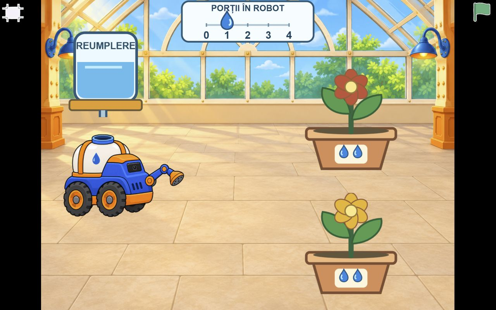
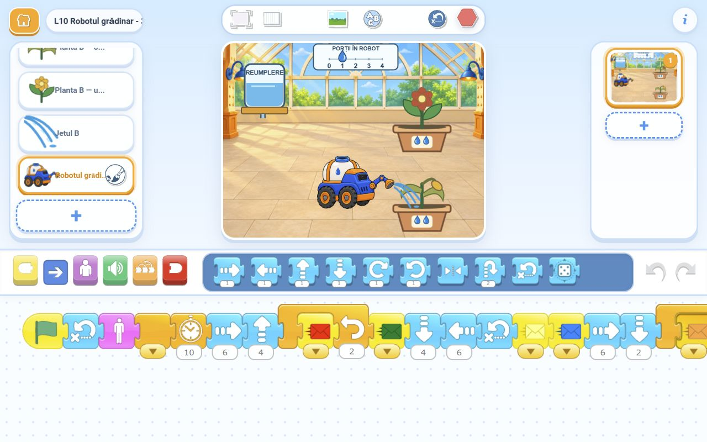

5–20 min
1. Prima plantă
Robotul se oprește lângă A și dă două porții. Indicatorul scade de la 3 la 1. Planta înflorește, robotul revine.
Lecția 10 · 60 de minute · robotică pe ecran
Instalația de udare din seră s-a oprit. Două plante cer câte două porții de apă, dar robotul poate duce numai trei. Îi programăm drumul, udarea și reumplerea ca să terminăm ambele ghivece.
Proiect de pornire fără cod · SJR
Plan + toate programele cu capturi · PDF · Ghidul profesorului

Primele 5 minute: poveste și demonstrație. Ultimele 5 minute: probă și salvare. Puzzle-ul greu este în ora de bază.
5–20 min
Robotul se oprește lângă A și dă două porții. Indicatorul scade de la 3 la 1. Planta înflorește, robotul revine.
20–35 min
O porție nu ajunge pentru B. La stație vedem apa curgând în rezervor; apoi indicatorul revine la 3.
35–55 min · dificil · pentru toți
Un singur Steag: A, reumplere, B și retur. Două porții la fiecare, fără jet în timpul deplasării.
Rezervă · +5–8 min
Indicatorul pornește de la 4. Putem termina ambele plante fără reumplere. Simplificăm traseul.
Rezervă · +8–10 min
Întâi câte o porție la fiecare plantă. Apoi revenim pentru a doua. Alegem unde reumplem rezervorul de trei.
O porție de apă înseamnă un jet și o deplasare a indicatorului spre zero. După A rămâne 3 − 2 = 1; pentru B trebuie să avem 2. Reumplerea este o decizie de programare.
Indicatorul este un model programat, fără verificare automată la zero. Copiii aleg ordinea comenzilor. Plantele schimbă aspectul după a doua porție, ca semn al misiunii încheiate.

PDF-ul are 20 de pagini: plan concis, pregătire și capturi reale ale tuturor programelor, la fiecare etapă. Firele lungi au continuări marcate clar; sunt incluse și ambele rezerve.
Ghid complet · PDF cu capturi · Lista proiectelor · PDF-ul celor zece lecții
Pe laptop, în ScratchJr Desktop Reborn: Open în galerie, alegi SJR-ul, apoi cardul grădinarului. Folosește o fereastră lată. Steag pentru pornire; Stop și Steag pentru reluare.
Pe tablete pregătești numai starterul înaintea orei. Nu copiezi imagini separat. Verifică importul și redeschiderea pe un Lenovo al școlii. Instrucțiuni complete.
Șase proiecte importate și redeschise în browser, cinci soluții rulate. Au fost verificate porțiile, nivelul apei, oprirea robotului în timpul udării, reumplerea, ambele rezerve și reluarea după Stop. Raport și dovezi.
Un Lenovo fizic nu a fost testat. Unele pictograme ale portului web au necesitat reselectarea aceleiași valori; capturile PDF arată blocurile complete.
Lecția veche · Ghid vechi · PDF vechi · ZIP vechi.